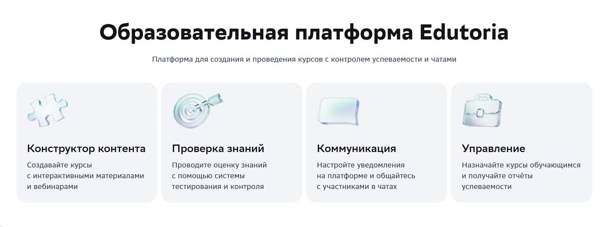
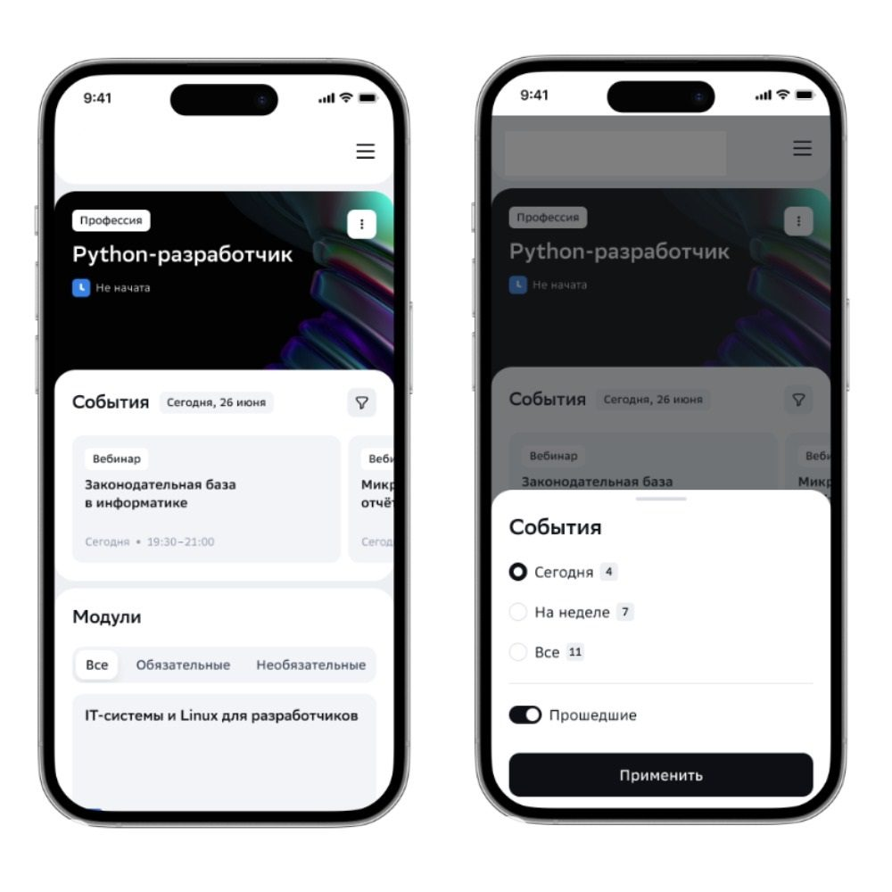

Студент сразу видит своё обучение: новая структура главной, профиля и карточки курса на образовательной платформе
Проблема

Edutoria — образовательная платформа Сбера: на ней создают обучающий контент, проходят курсы, преподают и управляют обучением. Индекс удовлетворённости студентов (CSI) составил 52%.
Студенты жаловались на неудобную структуру главной и профиля, непонятную организацию информации на странице магистратуры и на то, что нет уведомлений. Для бизнеса это означало высокую нагрузку на поддержку. Студентов на платформе было немного, и пользовались они ею мало.
Контекст и ограничения
Обновление запустило руководство. Работа шла в 2023–2024 годах. В команде, кроме меня, были дизайнер, исследователь, разработчики и поддержка.
Главное ограничение — вузы-партнёры: любые изменения в образовательных данных нужно было согласовывать с ними.
Моя роль
Я работал UX-редактором платформы. Что я сделал лично:
- предложил свои гипотезы для интервью, часть из них вошла в сценарий;
- присутствовал на интервью, разбирал записи и выделял проблемы;
- готовил варианты решений;
- пересобрал структуру главной, профиля, карточки события и карточки курса и подготовил прототипы;
- переписал тексты на этих экранах.
Макеты по моим прототипам сделал дизайнер.
Исследование
В исследовании было 7 интервью со студентами вузов, которые учатся на образовательных платформах. Я предлагал гипотезы для сценария, присутствовал на интервью и разбирал записи. Также я проанализировал конкурентов.
Главный вывод: на главной студенты ищут не информацию о себе, а данные об учёбе.
Параллельно я учился UX-редактуре в Нетологии и взял эту рабочую задачу кейсом для диплома. Прошёл по ней все этапы, чтобы понять, чего не хватает для решения и как строится процесс: провёл опрос, проанализировал конкурентов, собрал 4 ключевых экрана для десктопа, протестировал и доработал их, составил принципы ToV.
Решение
Главное решение — убрать с главной данные пользователя и оставить на ней события и модули обучения. Основание — вывод из интервью и анализа конкурентов: на главной ищут учёбу, а не себя. В текстах я придерживался формулировок, которые уже используются в учебном процессе вузов и одобрены Министерством образования, — это было требование вузов-партнёров.
Было → стало
- Главная: данные пользователя перенесены в профиль, остались события и модули обучения, карточка события пересобрана, появились фильтр событий и текущая дата.
- Профиль: данные разделены по категориям, навигация в меню стала удобнее, менять данные стало проще, появились уведомления и раздел с сертификатами и документами.
- Карточка курса: заголовки выстроены по иерархии, дата и время подняты наверх, условия проведения убраны в карусель, ограничения — в тултип, тексты кнопок стали информативнее.

Результат
Обновлённые главная, профиль и карточки вышли на платформу.
Удовлетворённость студентов выросла с 52% до 75% (+23 п.п.). Замеры разделяет примерно год: первый прошёл до выхода обновлений, второй — в 3-м квартале 2024 года, после них.
После обновления жалоб в поддержку на неудобство стало на 31% меньше, посетителей — на 4,3 тыс. больше в месяц, глубина просмотра выросла на 1 страницу, а время на платформе — на 40 секунд.
Оговорка: рост совпал с выходом обновлений, но другие изменения на платформе за этот период не исключены. Кто проводил замеры и за какие периоды считали жалобы и посещаемость, не уточнено.
Выводы
Структура важнее текста. Если информация лежит не там, где её ищут, хороший текст не поможет. С этого проекта я сначала проверяю, что пользователь ищет на экране, и только потом пишу.
Иерархия текста тоже важна. Когда на экране много разноуровневых заголовков, статусов и бейджей, их соотношение нужно продумать заранее, чтобы всё читалось понятно.